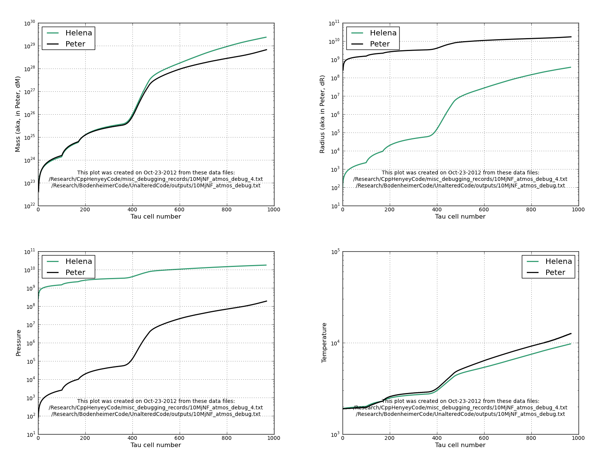

Eqn.
1
Date & Time: Oct. 22, 2012
Location: campus
Computing context: MachoMac
(/Desktop/Research/CppHenyeyCode/src, /Desktop/Research/BodenheimerCode/UnalteredCode)
From last time:
...I'm pretty sure this boils down to how the outermost G values are calculated, which in turn depends on how the atmospheric P/T/R/rho values are getting calculated. Debugging my atmos subroutine is probably going to be a long, involved, gnarly process that will drag on for about another month.
Still to do:
Still need to fix the problem w/ the G values disagreeing at the outermost boundary
To Do Today:
|
|
Results from the Helena 10Mjup, no fusion model, atmospheric values: |
Results from the Helena: atmospheric values, from the Peter-supplied values: |
Results from Peter's atmos subroutine: |
|---|---|---|---|
|
Atmos values: before any inputs get changed: |
Pout = 1.66993e+08 Rout = 8.75421e+10 Lout = 1.40224e+32 Tout = 12161.2 --------------------- Patm = 1.46546e+08 Tatm = 7533.33 Ratm = 1.11869e+10 ---------------------- First (outermost) atmos values: P = 81.2677 T = 1893.63 rho = 1.18294e-09 kappa = 0.0018962 ----------------------
|
Pout = 1.66993e+08 Rout = 8.75421e+10 Lout = 1.40224e+32 Tout = 12161.2 ---------------------- Patm = 1.46546e+08 Tatm = 7533.33 Ratm = 1.11869e+10 ---------------------- First (outermost) atmos values: P = 81.2677 T = 1893.63 rho = 1.18294e-09 kappa = 0.0018962 ----------------------
|
(inputs) Zmass= 1.748663683671694E+031 Pout = 166993483.387042 Rout = 87542104809.4471 Lout = 1.402235808868283E+032 Tout = 1.402235808868283E+032 (outputs) First values of: P= 8.7966E+01 RHO= 1.2812E-09 T= 1.8933E+03 AKM= 1.9530E-03 Atmospheric Parameters: T= 1.22E+04 R= 1.50E+10 P= 1.67E+08 RHO= 2.13E-04 Stellar Parameters: T= 2.25E+03 R= 8.75E+10 L= 1.40E+32 |
|
Atmos values with R varied |
Pout = 1.66993e+08 Rout = 8.75859e+10 Lout = 1.40224e+32 Tout = 12161.2 ---------------------- Patm = 1.46605e+08 Tatm = 7531.27 Ratm = 1.11951e+10 ---------------------- First (outermost) atmos values: P = 81.4052 T = 1893.15 rho = 1.18531e-09 kappa = 0.00189106 ---------------------- |
Pout = 1.66993e+08 Rout = 8.79798e+10 Lout = 1.40224e+32 Tout = 12161.2 ---------------------- Patm = 1.43102e+08 Tatm = 7461.85 Ratm = 1.12059e+10 ---------------------- First (outermost) atmos values: P = 82.6592 T = 1888.91 rho = 1.20717e-09 kappa = 0.00184538 ----------------------
|
(inputs) Pout = 166993483.387042 Rout = 87979815323.7107 Lout = 1.402235808868283E+032 Tout = 1.402235808868283E+032
(outputs) First values of: P = 8.9239E+01 RHO = 1.3040E-09 T = 1.8886E+03 AKM = 1.9025E-03 Atmospheric Parameters: Tatm = 11930.8659605887 Rhoatm = 2.115572669503067E-004 Ratm = 14954723622.7242 Patm = 162772825.885528 Stellar Parameters: T= 2.25E+03 R= 8.80E+10 L= 1.40E+32 |
|
Atmos values with L varied |
Pout = 1.66993e+08 Rout = 8.75421e+10 Lout = 1.40294e+32 Tout = 12161.2 ---------------------- Patm = 1.46475e+08 Tatm = 7534.33 Ratm = 1.11881e+10 ---------------------- First (outermost) atmos values: P = 81.171 T = 1893.86 rho = 1.18134e-09 kappa = 0.00189848 ----------------------
|
Pout = 1.66993e+08 Rout = 8.75421e+10 Lout = 1.40925e+32 Tout = 12161.2 ---------------------- Patm = 1.4685e+08 Tatm = 7556.32 Ratm = 1.12149e+10 ---------------------- First atmos values: P = 80.3151 T = 1895.99 rho = 1.16714e-09 kappa = 0.00191897 ---------------------- |
(inputs) Pout = 166993483.387042 Rout = 87542104809.4471 Lout = 1.409246987755913E+032 Tout = 1.402235808868283E+032 (outputs) First values of: P = 8.7055E+01 RHO = 1.2658E-09 T = 1.8956E+03 AKM = 1.9761E-03 Atmospheric Parameters: Tatm = 12282.8685099036 Rhoatm = 2.112800701284692E-004 Ratm = 15149478351.8969 Patm = 167698890.222631 Stellar Parameters: T= 2.25E+03 R= 8.75E+10 L= 1.41E+32 |
[] Calculate the outer G values and the D values for both Peter & Helena by hand, based on the numbers you get out in the previous steps.
Eqn.
1
|
|
|
Results from the Helena 10Mjup, no fusion model, atmospheric values: |
Results from the Helena: atmospheric values, from the Peter-supplied values: |
Results from Peter's code: |
|
Atmos values: before any inputs get changed: |
Outer G values, calculated by hand |
G1: 2.0447e7 G2: ?? (Need Rout-1 to calc. this) G3: ?? (Need Lout-1 to calc. this) G4: 4627.87 |
G1: 2.0447e7 G4: 4627.87 |
G1: ~0 G4: |
|
Outer D values, calculated by hand |
|
|
|
|
|
Atmos values: with R varied |
Outer G values, calculated by hand |
|
|
|
|
Outer D values, calculated by hand |
|
|
|
[done] Carry out a few more of these outer D & G value calculations using both the Peter and Helena atmos values - - just enough to verify that the problem lies w/ the atmos subroutine calcs in Helena
Then, go about debugging the atmos subroutine in Helena. Do this in several steps:
1) [done] Give Helena the same starting (outermost) atmos P and T (and kappa ? ) values that Peter's code starts from, and see if that fixes, or even changes, anything in Helena's atmos results . (I suspect it will not, but we'll see.)
In Peter's code, w/ the nothing - varied atmos for the 10 Mjup test case, the outermost atmos starting values are:
P = 89.239
rho = 1.3040e-9
T = 1888.6
kappa = 1.9025e-3
Sure enough, plotting/comparing the results using compare_atmos_calcs.py reveals that the two codes' atmos results still do not agree at all.
2) Read in the dTau values from Peter's atmosphere, and have Helena use those, instead of the Ones it's been calculating itself. To do this, will need to do the following Steps:
[done] A) Use Python to read in the atmos. values/data from Peter's atmos Calcs.
[done] B) Use python to calculate and write out the dTau values from Peter's atmosphere.
[done] C) Get Helena's atmos subroutine to read that file into an array.
[done] D) Get the atmos subroutine to loop over the elements of that dTau array, rather than using the do - while loop it currently is.
[done] E) Instead of calculating the dTau value at each step, as it currently is, get the subroutine to use the Nth element in the dTau list.
[done] F) Modify Helena to print out the atmos valueS at each step to a text file.
[done-- See Figure 1] G) Plot those results against the atmos values calculated by Peter's code, and see how well or poorly they agree.

A
comparison of Helena and Peter atmos calcs, starting from the same
initial (outer) conditions (P, T, rho, and kappa), and using the
same dTau values used/generated by Peter's atmos subroutine. Both
calculations are for the 10 Mjup, no fusion model.
Figure
1:
Note that the analysis results shown in Figure 1 are entirely independent of how either code handles the outermost G/D calcs. (This should be BLAZINGLY obvious, but future - me will probably forget that & get unnecessarily confused at some point, so here it is in writing for all posterity.)
The results from the two codes do NOT match up well at all, which means one or more of the following:
1) The way Helena is figuring out / using the Mtemp and Rtemp values at each Runge - kutta step is wrong
2)
The initial conds for M/R in Helena are wrong. (Because I'm setting
them incorrectly w/ in the atmos subroutine.)
This seems to be okay.
3) I have a typo in one or more of the RK4 intermediate integration steps.
To figure which it is, need to get outputs fr. Peter's code fr. the intermediate steps in the atmos Rk4 integration, and compare them to what Helena's doing at the same points.
The first things to do to debug this are:
[done] Get Peter's code to print out the Rtemp and Mtemp values (and atmos tau cell #) it's using in just the first Rk4 step thru-out the atmos.
Hmm... there are 1358 tau cells in this atmos (Peter's Code, calling the atmos subroutine immediately after reading in the 10 Mj starting model - before running the Henyey subroutine)
Before, there were only 967 cells... or at least, that's true for the data that went into generating the values plotted in Figure 1.
Is this going to be a problem? Keep an eye on this...
[done] Print that info to a text file
Results stored in /BodenheimerCode/UnalteredCode/outputs/10MjNF_atmos_debug_2.txt
[done] Modify the Helena atmos subroutine to do the same.
Results stored in /CppHenyeyCode/misc_debugging_records/10MjNF_atmos_debug_5.txt
[done] Plot / compare the results, to see if they differ in a way that explains the problems in Figure 1.
[
] This may involve writing a python script to read in, process, plot
the files.
[done] I know that the tau = 2/3 surface in both cases falls b/w the 157th and 158th atmos cells. After this point, the Mtemp and Rtemp Values should start changing, and no longer be Mstar and Rstar, respectively. Does this actually happen in the Helena atmos calcs?
-->
Answer: in Helena, Mtemp always = Mstar, and Rtemp always = Rstar.
So, the way I've got it calculating the M/Rtemp values must be (at
least one of) the bug(s).
No, that was just b/c of a typo-- I'd accidentally commented out the
portion of the code where it finds the tau = 2/3 surface and sets
Mtau23 and Rtau23.
To
Fix My M/Rtemp Error:
[
] Have Helena print out the quantities in the max(foo, bar) calls in
the M/Rtemp calcs on all of the first Runge-kutta steps.
[
] Have Peter's code do the same.
[
] Compare the two, especially where tau > 2/3
Need to make sure both atmos subroutines are starting from the same initial conds. That said, it Looks like the "GD" value (fr. Peter's code) differs b/w the two codes. REALLY not sure why that is.
Start next time by making Sure both atmos codes are starting fr. the Same initial COnds. If not , fix that, and go from there.
Notes on progress/ideas/to-do for the Amazon Web Service elastic computing thing:
The issues I'm currently trying to sort out w/ Hadoop are as follows:
1) Hadoop, by itself, Only takes map and reduce functions written in Java. However, Java is Hard. Also, more importantly, most scientific codes are *not* written in Java, or in *any* scripting language for that matter. So, how to get Hadoop to use one of those codes as its 'map' function?
2) you can start to get around that problem by using Hadoop streaming, which takes *any* executable programs in the "map" and "reduce" Slots . So, if you have program.cpp that Compiles to the executable myProgram, you could specify myProgram as your "map" function.
However, this still requires that ALL the inputs to myProgram come from the command line. In the case of Helena, and many other Scientific computing codes, the program needs to read in MUCH more than just a few parameter values in order to do its task. For instance, Helena needs to read in an entire file of data to start its initial model . In addition, it needs to read in several files containing the E0S look-up table values. So, the question is: --> How do you pass along the input files that your executable needs w/ the function call to myProgram? (I've Seen some mention of zipping up the external files & passing that single .gz file along w/ the Hadoop map - reduce call, but I'm not entirely sure how that works, Or whether passing copies of all those extra files, zipped or not, will end up making the process too Computationally or memoy-usage-ly intensive.
2.5) scientific programs usually create entire files of output (sometimes several per individual Simulation run). Is it possible to pass those *files* as inputs to the "reduce" function? Does a single processor handle all of the outputs from a Single map shard process? Or is there no way of knowing which Set of input data generated any of the items reduce is acting on? This is important to figure Out, b/c your simulation results mean NOTHING if you don't know what inputs to use to reproduce them.
3) For right how, I don't think We need to worry about supplying a " reduce " function that does anything. In the future, you might see whether the reduce fuction is the appropriate place to do basic data parsing and analysis. Grouping results by keyword value pairs - which is how the reduce function basically works, may make figuring out how to translate my analysis Scripts to "reduce" - functional form kind of tricky.
4) In order to start testing any of this stuff out, I need to be able to RUN Hadoop on some machine.
A) First, need to be able to run Hadoop Locally, as a single - node cluster on my own machine.
B) If there is some way of getting my single, local machine to impersonate a cluster of multiple nodes, have it do that (BUT HOW?!) and run the Hadoop map - reduce process locally.
C) Once I can get this working and debugged on my local machine, where computing time is free, try getting it to work on the Amazon cloud servers. ( It sucks that their EMR framework doesn't let you use the free micro - instances to form your virtual cluster, b/c I just know I'm going to end up burning thru a lot of non - free computing hours on there, which are coming out of my own rather shallow grad student pockets for the time being )